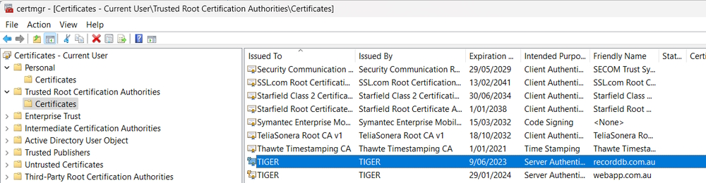

Note: I have previously setup my website in IIS and added a record in my hosts file to map to my website name.
127.0.0.1 RecordDB.com.au
Go to IIS website and download the URLRewrite executable. Install it on your machine and now go to your IIS console and select your website (in my case it will be recorddb.com.au).
You should see this in your website settings.
Go to the Root of your IIS server and click on Server certificate.

This opens the following dialog.

Add a friendly name, recorddb.com.au and make sure personal is selected. You will then see a list of all your personal certificates.

On your website in IIS right-click and select Edit Bindings to add a new SSL binding.

Remove the port 80 binding.
You can now use https to serve your website by clicking on the Browse Website option. Make sure to select the https link.

You will get a browser error of Potential Security Risk Ahead. Continue on and ignore this.
Your browser displays an error page because the self-signed certificate was issued by your computer, not by a trusted Certificate Authority (CA). Browsers will trust the certificate if you add it to the list of Trusted Root Certification Authorities in the certificates store on the local computer, or in Group Policy for the domain.
You can see your certificate in Certificate Manager.

Note: In Firefox you see you link as.

If you click on the certificate it tells you that the connection isn't secure. Chrome, Brave and Edge will have a line through https to let you visually know that the site isn't secure.
Normally we would finish here but I am going to add a URL Rewrite rule to our website.
Click on URL Rewrite in your website. Add a new blank rule named Http Redirect.
The setting are.


Now if a user uses the URL, http://recordb.com.au it will be redirected to https://recordb.com.au